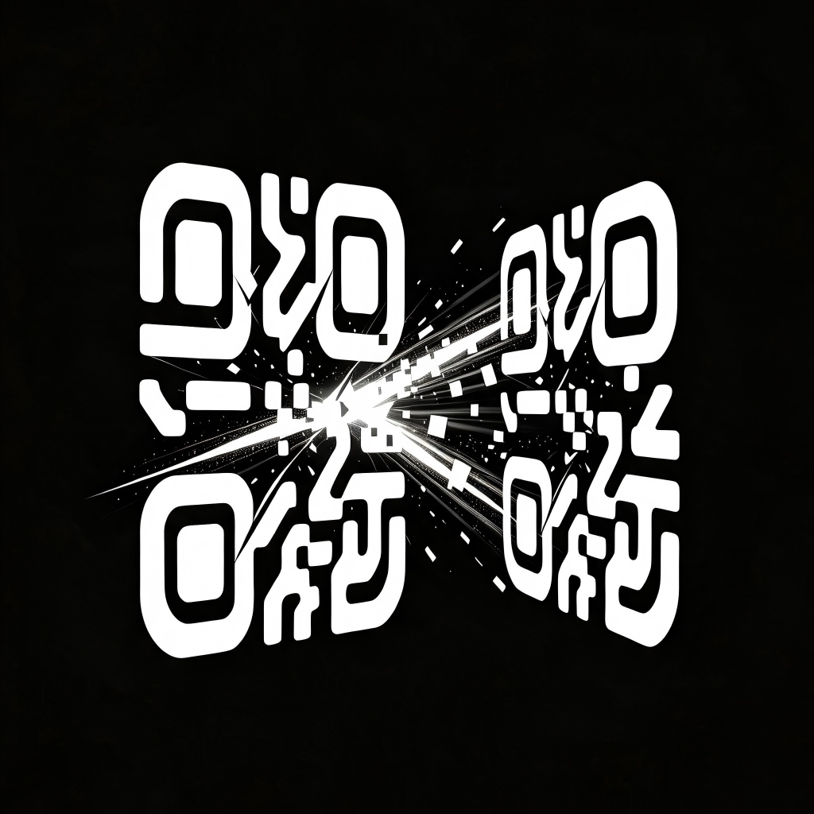

LiveQRTransfer
从屏幕到摄像头——无需无线信号或收发帐户
- HarmonyOS版本
- v1.0.0
- Decimen内核版本
- v0.5.2
- 开源协议
- AGPL-3.0-or-later
- 兼容性
- 兼容所有 Decimen 设备
- 联系我们
- bowen_zbw@sjtu.edu.cn
使用说明
一、支持设备（多端兼容）
- Harmony OS 6.1 及以上鸿蒙手机 / 平板 / 电脑：在 AppGallery 应用市场搜索并下载 LiveQRTransfer，即本应用；
- 电脑（Windows / macOS / Linux）：浏览器打开 decimen.app 网页版，点击“保存为应用”或“添加到桌面”即可使用；
- 安卓 / iOS / Harmony OS 6.0 及以下鸿蒙设备 ：用 系统浏览器 打开 decimen.app，点分享 →「添加到主屏幕」，即可像 App 一样使用；
- 多端兼容：发送端与接收端可任意组合——鸿蒙手机发送、电脑接收，或网页发送、鸿蒙设备接收都可。传输全程无需网络、无需信号，数据以光为介质。
二、发送端参数说明（传输设置）
- 发送帧率（10–60 帧/秒）：二维码刷新的速度。越高传输越快，但接收端解码压力越大。默认 60；若接收端频繁丢帧或校验失败，降到 30 或 20。
- 每帧字节数（500–2953 字节）：每帧携带的数据量。越大速度越快，但二维码更密集，对光线和对焦要求更高。默认 2953；弱光或手持抖动时调小。
- 纠错级别（L / M / Q / H）：二维码的容错等级。L 最快但最怕污损遮挡，H 容错最强（约可容忍 30% 遮挡）。默认 L；画面常被遮挡时选 H。
- 布局（1 / 2 / 4 / 6 个二维码）：同一屏显示多个二维码，速度成倍提升，但单个码变小。1 个最稳；手机之间建议 1–2 个，设备固定时可 4–6 个。
- 显示大小（300–1200 px）：二维码在屏幕上的尺寸，越大越容易扫。默认 900。
- 内容限制：文本片段最多 4 MB；文件单次最多 64 MB（浏览器限制）。发送前文件自动 gzip 压缩，接收后自动解压并做 SHA-256 校验。
三、接收端参数说明（接收设置）
- 采集宽度（960–3840）：摄像头采集分辨率。越高识别越准、越耗电。默认 1280；设备较旧可降到 960。
- 采集帧率（30 / 60）：摄像头采集帧率，建议与发送端帧率一致。默认 60。
- 解码线程（1–6）：并行解码的工作线程数，越多解码越快但越耗电。默认按设备性能自动选取。
四、常见问题
- 收不到信号：确认发送端与接收端面对面，发送端屏幕亮度调到最高，距离约 20–40 厘米，避免反光；发送端页面保持在前台（切到后台会停滞）；点击放大二维码；调低帧率、字节数、布局数。
- 传输很慢：提高发送帧率 / 每帧字节数，改用多二维码布局；缩短距离、放稳设备；确认接收端解码线程充足。
- 频繁校验失败或卡住：降低每帧字节数、纠错级别选 H、增大显示大小；对焦抖动是最大敌人，尽量把设备固定住。
- 摄像头无法打开：检查是否已授予本应用相机权限。
- 提示文件超限：单文件不能超过 64 MB，可压缩后（zip/rar）再发送。